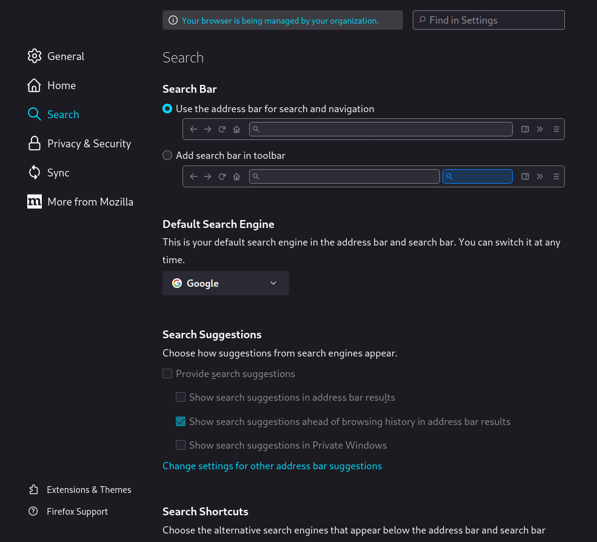
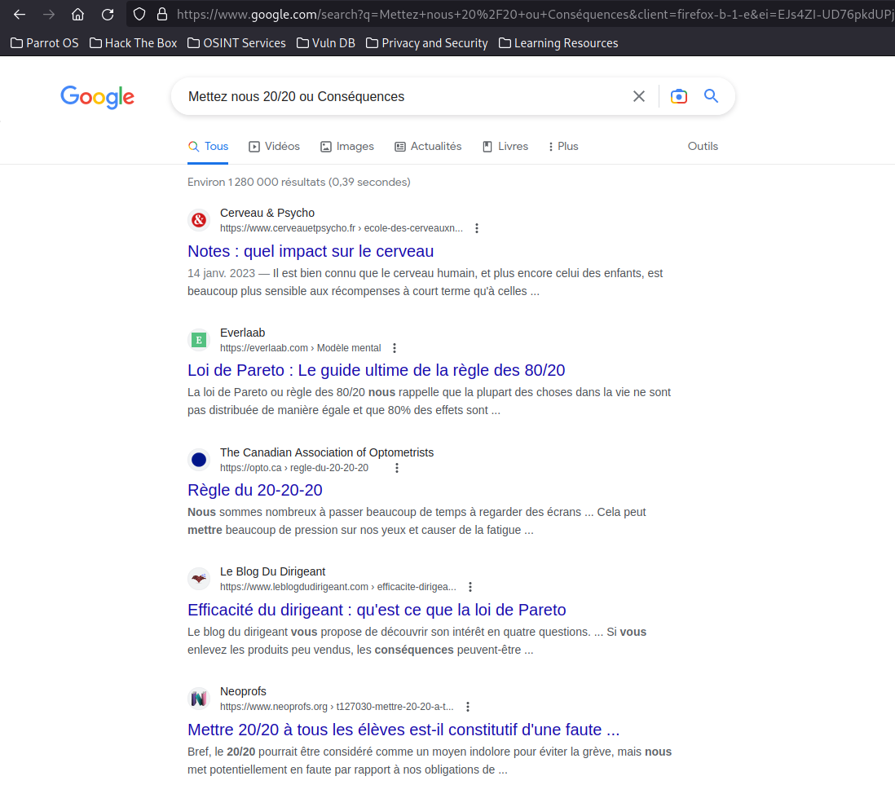

Le Surface Web est extrêmement facile d'accès. Il s'agit aussi de la partie du web la plus connu du web.
Pour aller sur le Surface Web, il vous suffit d'un navigateur web :
Si aucun des navigateurs ne vous plait, libre à vous de choisir le votre.
Configurez votre moteur de recherche dans la partie "Search" des paramètres de votre navigateur.
Tappez simplement des mots clés dans la barre de recherche ou dans la barre d'adresse et le tour est joué !
Les sites que vous voyez à l'écran sont tous des sites du Surface Web ! Cliquez sur l'un d'eux pour y accéder.